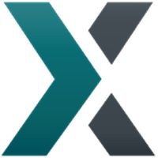

What is Lisk?
Liskは2016年5月に設立された、ブロックチェーンのアクセシビリティに焦点を当てたオープンソースプロジェクトです。 Liskのエコシステムは、開発者ツール、暗号通貨ウォレット、そして活気のあるコミュニティを通じて、ブロックチェーンテクノロジーの恩恵を受けるすべての人に機会を提供します。
Making Blockchain Accessible
Liskとは？
Liskは、Max KordekとOliver Beddowsにより開発されたブロックチェーンアプリケーションプラットフォームです。2016年5月24日（現地時間）にICO（イニシャル・コイン・オファリング）で14,000BTCを調達し、最初の「Genesis Block」が作成されました。Lisk自体はスマートコントラクトを持っていませんが、Liskサイドチェーン上に設置する事が可能です。
Liskの特徴
Liskの大きな特徴として、数行のJavaScriptでSidechain(Privatechain)を構築できる事が挙げられます。 Sidechainの実装はまだ行われていませんが、既にリリースされているLisk SDKを使いPrivatechainの作成が可能です。Liskは今の状況を「Blockchain技術を最大限生かせる活用事例探しの期間」と捉え、Delegateを始めとした多くの開発者達へ、このLisk SDKを使い様々なPoCに取り組んでもらえるよう呼び掛けています。 PoCとは「概念実証」の意味で、新しい概念や理論、原理、アイディアの実証を目的とした検証やデモンストレーションを指します。
通貨コード : LSK
承認アルゴリズム
DPoS
発行上限
なし
Block生成サイクル
約10秒
Block生成報酬の変化
2017年 – 5LSK → 4LSK
2018年 – 4LSK → 3LSK
2019年 – 3LSK → 2LSK
2020年 – 2LSK → 1LSK
※2020年秋までのブロック生成報酬は2LSK
※2020年秋以降のブロック生成報酬は1LSKで固定
Liskの報酬減期について
Liskは、2016年にGenesis Blockが作成されて以降、1年に1度Block生成報酬が1LSKづつ減っていましたが(3,000,000block毎)、2020年10月に予定される「報酬減期」を迎える事で、それ以降は1LSK固定となります。
Reward Reduction Countdown
ユーティリティトークン”LSK”
「LSK」はユーティリティトークンの名前となり、Liskエコシステムを活性化する為に存在しています。このユーティリティトークンはLisk Blockchainでの取引手数料の支払いに使用されます。
開発環境
Lisk SDKを使用して、Blockchain Applicationの作成ができます。SDKとは「ソフトウェア開発キット（Software Development Kit）」の略で、LiskSDKではJavaScriptのみでBlockchain Applicationを構築することが可能です。
Lisk SDKはNodeJSランタイムで動作するApplication framework「Lisk Framework」、Blockchain Application機能を提供するライブラリコレクション「Lisk Elements」、および開発者がLiskを管理できる強力なCommand Line Interface「Lisk Commander」で構成されています。主な特徴は以下の通りです。
1. オープンソース
Liskプラットフォームを無料で構築し、コミュニティが作成した一連のツールを利用できます。
2. Modular Architecture
オールインワンツールキットを使用して、わずか数分でブロックチェーンアプリケーションを簡単に構築し、ユースケースの要件に合わせてカスタマイズできます。
3. JavaScript
このプログラミング言語の人気、アクセシビリティ、および柔軟性を活用してください。複雑なプログラミング言語を学ぶ必要なく、ブロックチェーンアプリケーションを記述します。
4. 焦点を絞った開発者の経験
Lisk SDKはBlockchainの複雑さを可能な限り軽減し、開発初心者でもブロックチェーンアプリケーションの開発を理解しやすくします。
Lisk SDK
Lisk Elements
Lisk Commander
Lisk Framework
開発者支援（Lisk Builders Program）
Lisk SDKを使用して、概念実証Blockchain Application(PoC)を構築する開発者を支援しています。概念実証Blockchain Applicationを開発するための5,000 CHFを支援します(1回限り)。
1. プロダクトの所有権は維持されます
提出されたApplicationに対し、全ての権利を開発者が保有できます。
2. Lisk SDKでビルドしてください
全ての概念実証Blockchain Application(PoC)は、Lisk SDKを使用して独自のBlockchainで開発する必要があります。
3. 複数回応募できます
Lisk Builders Programには複数回応募できます。
Liskを取り扱う取引所
Coincheck
Trading Pair : JPY
Location : Global
bitFlyer
Trading Pair : JPY
Location : Global
Binance
Trading Pair : BTC, ETH, BNB, USDT
Location : Global
Kraken
Trading Pair : BTC,ETH, EUR, USD
Location : Global

Poloniex
Trading Pair : BTC, USDT
Location : Global
Bittrex
Trading Pair : BTC
Location : Global
Huobi
Trading Pair : BTC, ETH
Location : Global
OKEx
Trading Pair : BTC, USDT
Location : Global
BitBay
Trading Pair : BTC, EUR, PLN, USD
Location : Global
UpBit
Trading Pair : BTC, IDR, KRW, SGD
Location : Global
CuCoin
Trading Pair : BTC, ETH
Location : Global
Bitpanda
Trading Pair : CHF, EUR, GBP, USD
Location : Global
安全で高機能なLisk Wallet
LSKを購入した際は、ビットコイン（BTC）も保管可能なLisk Walletでの保管をお勧めします。
MobileとDesktopの2種類があり、OSはiOS, Android, Mac, Windows, Linuxが選択可能です。またLSK以外にBitcoin(BTC)も安全に保管・送金が可能で、LSK⇄BTCのWallet切り替えも簡単・スムーズに行えます。 Lisk WalletではLSKのTransactionを始めDelegateへの投票、Networkの監視、2nd passphraseの設定、Delegate登録、Lisk Blockchain Explorerとして機能し、Sidechainが実装されると、このWalletからダイレクトに分散型取引所(DEX)との取引やICO、自分だけのBlockchainの作成が可能になる予定です。 PC版では、下記ハードウェアウォレットのサポートが可能です。
・Trezor One
・Trezor Model T
・Ledger Nano S
・Ledger Nano X

 Binance
Binance